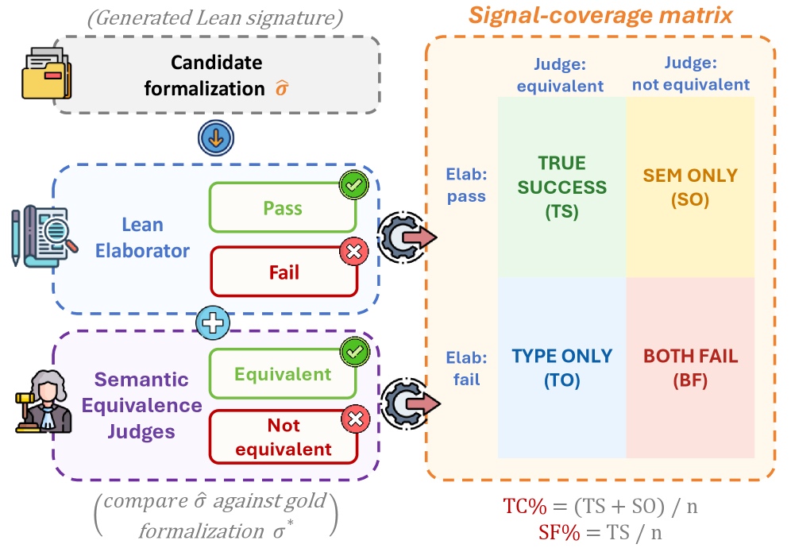
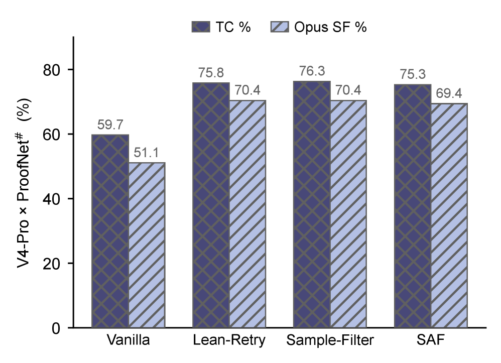

Uses the Lean elaborator as ground truth for type-correctness in a diagnostic matrix evaluating autoformalization methods.
Abstract
Headline type-correctness (TC\%) of LLM autoformalization has climbed from $\sim$53\% to $\sim$76\% in two years, yet this scalar conceals which errors each method resolves. We propose a signal-coverage matrix that crosses the Lean elaborator (pass/fail) with a semantic-equivalence judgment (equivalent/not), sorting every output into one of four cells: true success (TS), type-only (TO), semantic-only (SO), or both fail (BF). On ProofNet\# and MiniF2F-test with DeepSeek V4-Pro across Vanilla, Lean-Retry, Sample-Filter, and Stratified Autoformalization (SAF): (1) the +34 to +36 TS gain across the three elab-feedback methods is $\sim$64\% type-stratum recovery, with SO flat on net (87.5\% of original semantic errors rescued, 8 newly created). (2) The TO-to-TS rate is 23/61 for each method (Wilson 95\% CI [26.6\%, 50.3\%]), and this stratum-level recovery rate predicts $Δ$TS on held-out methods to within 2/186 and renders $Δ$TC linear in the Vanilla elab-fail rate across six (model, dataset) cells ($R^2=0.96$). (3) The two judges disagree by 26 to 37 pp on elab-feedback outputs (vs. 7 pp on Vanilla), with 30 to 56\% of symbolic-judge false negatives traceable to elaborator-forced rewrites. The persistent residual reduces to two gold-formalization errors. TC\% gains should be credited by which cell moved, not by the scalar alone.
Problem
Headline type-correctness scores for autoformalization conceal which error types each method resolves, making it hard to diagnose where improvements come from.
Approach
A signal-coverage matrix crosses the Lean elaborator pass/fail signal with a semantic-equivalence judgment, sorting each output into four cells (true success, type-only, semantic-only, both fail). Four methods (Vanilla, Lean-Retry, Sample-Filter, SAF) are evaluated on ProofNet# and MiniF2F-test with DeepSeek V4-Pro.

Figure 1 : Signal-coverage matrix: elaborator (pass/fail) \times judge (equivalent/not) gives the 2{\times}2 cell decomposition and TC%/SF%.
Results
The +34–36 true-success gain from elaborator-feedback methods is ~64% type-stratum recovery with semantic-only errors staying flat. The TO-to-TS recovery rate (23/61) predicts delta-TS on held-out methods to within 2/186 (R²=0.96).

Figure 3 : TC% and Opus-judged SF% across four methods on DeepSeek V4-Pro \times ProofNet # . The three elab-feedback methods (Lean-Retry, Sample-Filter, SAF) cluster within \sim 1 pp on both axes.
Method
TS
SO
TO
BF
TC%
SF%
Vanilla
95
16
61
14
59.7
51.1
Lean-Retry
131
10
41
4
75.8
70.4
Sample-Filter
131
11
37
7
76.3
70.4
SAF
129
11
39
7
75.3
69.4
Signal-coverage matrix counts across methods (ProofNet#, DeepSeek V4-Pro)